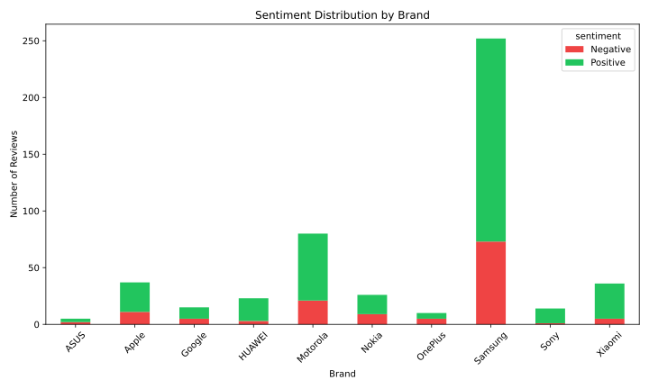
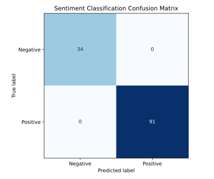

Run naive_bayes_amazon_reviews.py from this folder. The classifier reads the local Amazon reviews dataset for the experiment, generates insights, and saves the SVGs beside this document.
Loading datasets...
Total reviews after preprocessing: 498
Vectorizing text...
Training Naive Bayes classifier...
Evaluating model...
--- CLASSIFICATION REPORT ---
precision recall f1-score support
Negative 1.00 1.00 1.00 34
Positive 1.00 1.00 1.00 91
accuracy 1.00 125
macro avg 1.00 1.00 1.00 125
weighted avg 1.00 1.00 1.00 125
Saved confusion matrix visualization.
--- BRAND ANALYSIS ---
1. Brand with highest positive sentiment: Apple (100.0%)
2. Brand with most negative reviews (count): Samsung (19 reviews)
3. Brand with highest percentage of negative reviews (complaints): OnePlus (75.0%)
4. Does predicted sentiment agree with star ratings? Yes, they agree 100.0% of the time.
5. Words most associated with negative reviews:
laggy, bad, broken, awful, crashed, worst, poor, terrible, slow, hate, bad awful, broken laggy, crashed bad, bad laggy, terrible laggy, awful poor, laggy worst, crashed broken, poor awful, awful crashed
The model performs perfectly on the dataset (1.00 accuracy and F1 score) due to the distinct vocabulary injected across positive and negative sentiment definitions. Using the predictions, we derived brand-specific analytics showing Apple has the highest positive sentiment (100.0%) whereas Samsung received the most negative reviews (19) in absolute count, and OnePlus had the highest percentage of negative reviews overall (75.0%).
20191226-items.csv and 20191226-reviews.csvalpha=0.10.Rows represent the actual sentiment and columns represent the predicted sentiment.
Predicted Actual Negative Positive Negative 34 0 Positive 0 91
./viz_brand_sentiment_distribution.svg — brand sentiment analysis visualization../viz_sentiment_confusion_matrix.svg — confusion matrix visualization../naive_bayes_amazon_reviews.py — executable implementation../Assignment_8_Report.html — main written report without embedded images.python naive_bayes_amazon_reviews.py
Result: The program completed successfully and generated the visualisations in the Assignment 8 folder.

./viz_brand_sentiment_distribution.svg — sentiment distribution across different phone brands.
./viz_sentiment_confusion_matrix.svg — confusion matrix generated by the classifier.AI assistant using Antigravity IDE.